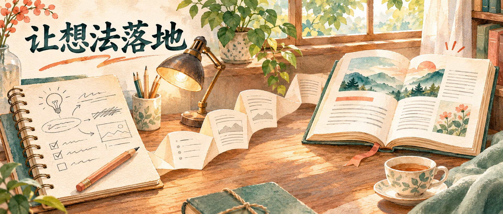
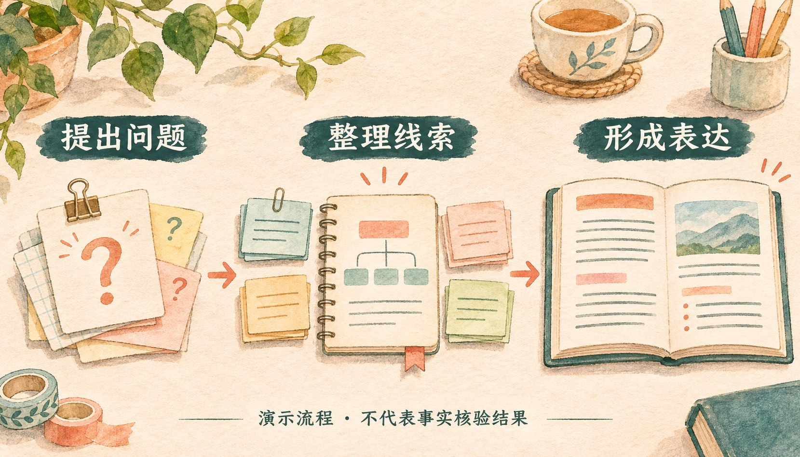

演示文章 · 一页笔记如何长成一篇文章
先找到问题，再整理答案

桌上散着几页笔记：一句突然想到的话，一段还没理顺的观察，还有几个问号。材料已经不少，真正难的却是决定，这篇文章到底想回答什么。
把“我知道哪些事”换成“读者正在困惑什么”，笔记就有了方向。与其急着把所有材料摆上来，不如先选一个可以说清楚的问题，再围绕它寻找线索。
相近的观察放在一起，支撑结论的依据留在旁边，暂时回答不了的问题也记下来。整理不是把复杂内容抹平，而是让读者看见观点是怎么一步步形成的。

一段发展一个重点，一张图解释一个关系。小标题指路，段落之间留白，配图和它解释的文字相邻。排版的目标不是填满屏幕，而是让读者愿意读完下一段。
把笔记变成文章，也是在把一个模糊的念头变得可以讨论。写完之后，再回头问一次：这个问题，真的回答清楚了吗？
本篇只演示创作结构与排版，不是新闻报道或研究结论。实际文章应依据自己的选题和已核资料创作。